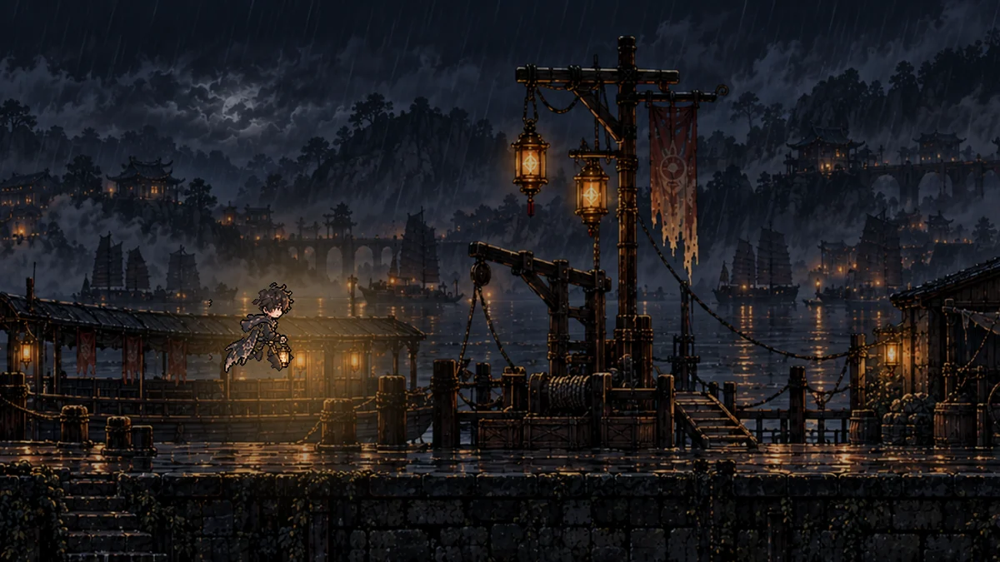
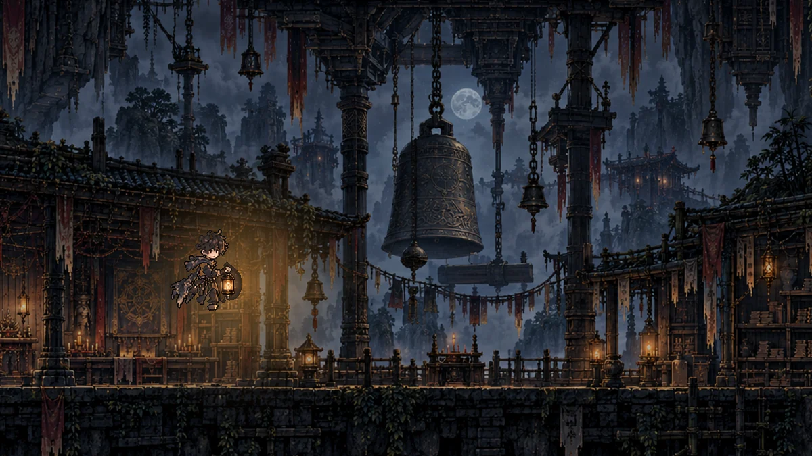
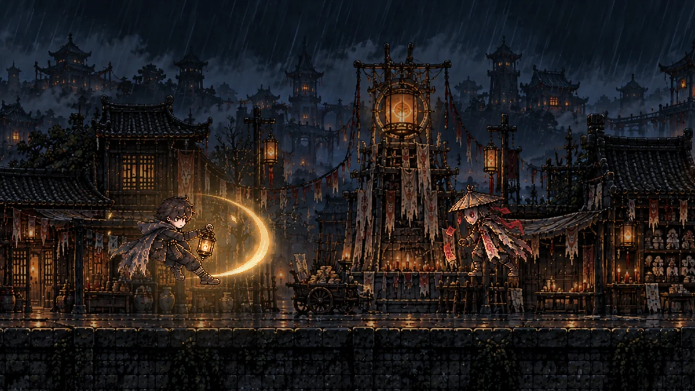
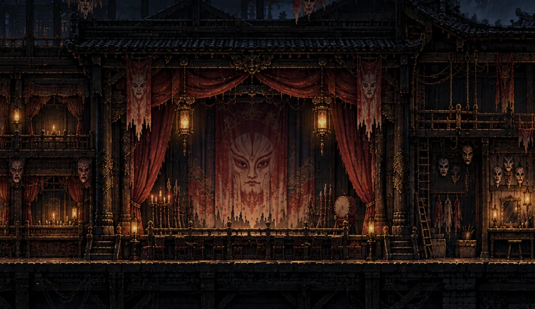
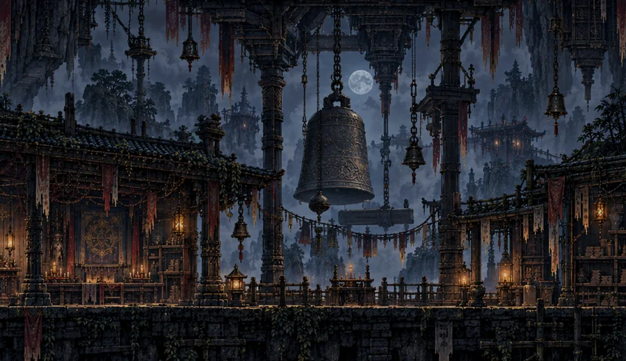
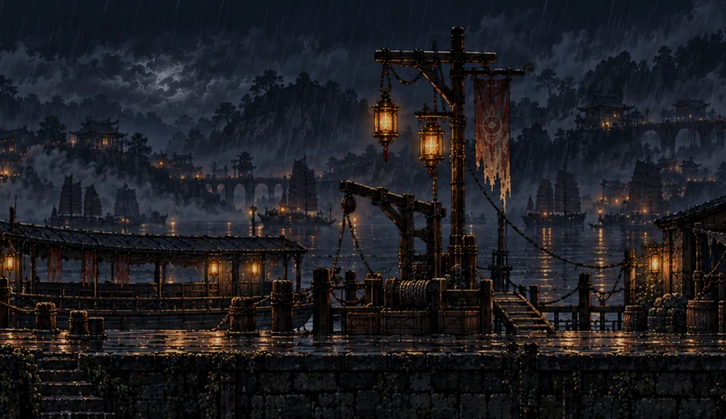
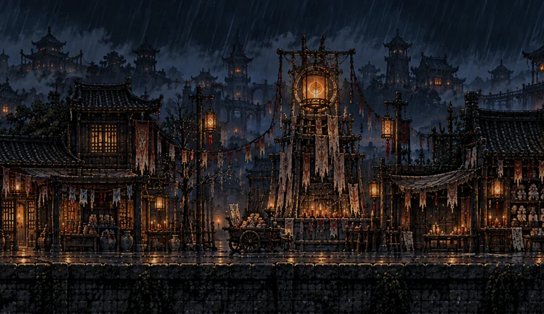
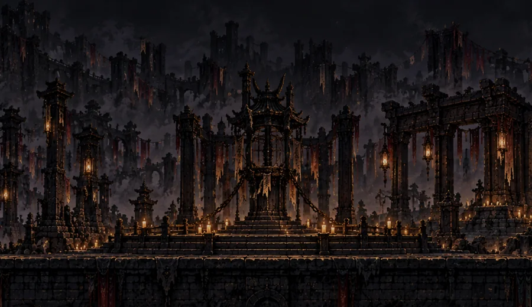
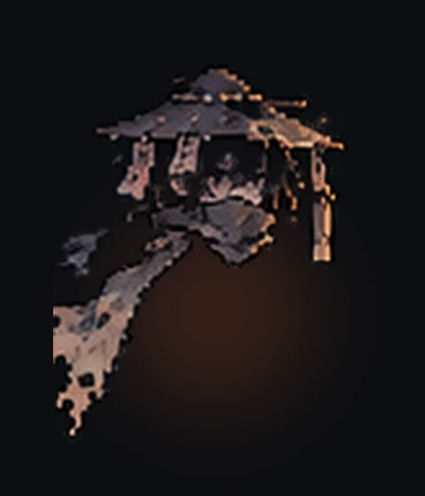
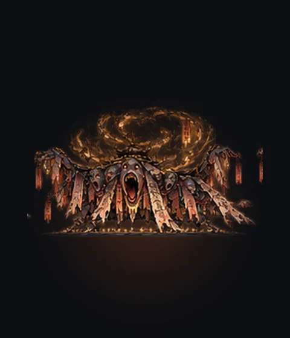

01
探索
提灯穿过雨夜与幽都，寻找隐藏路径、NPC和散落的线索。
中式怪谈 · 横版剧情解谜
提灯探索无阴镇，在雨巷、戏楼、竹寺、古渡与纸城之间，解开机关、直面怪物，也一步步照见自己的来处。
HOW TO PLAY
不是单纯打怪。灯、尺与祭刃既是战斗工具，也是你理解世界规则的方法。

提灯穿过雨夜与幽都，寻找隐藏路径、NPC和散落的线索。

照见、定影、移灯。每个谜题都建立在同一套灯火规则上。

裁魂尺三段连击、祭刃切断规则，在怪物攻击预兆中找出破局时机。
THE JOURNEY
每个场景不是换皮关卡，而是阿砚追索身份真相的一段证据。

锣声、戏单与无脸的旧角色。

钟声倒置，水面记住另一个方向。

名签泡在水里，倒影先于名字开口。

墓灯与纸拓，替失去名字的人归位。

影、声、名、位最终落向同一个人。
WHO YOU MEET
纸扎铺学徒。第七盏灯维持着他的存在。
把阿砚养大的人，也比谁都更早知道灯的秘密。

被剥离的影，在不同地点等着阿砚追上。
纸身被怨念牵动，攻击前会留下可读的预兆。

灯火、口舌与被遗忘的名字缠成的巨大怪物。
LATEST UPDATE
完整在线试玩、Windows下载入口、玩法与世界观展示、更新日志、玩家反馈和留言墙。
FEEDBACK
不公开私人联系方式。你可以直接提交Bug、操作问题、剧情反馈或建议。
公开 Bug 会进入 GitHub Issue，适合卡关、操作、画面与兼容性问题；私密反馈后台还未接入，因此不会伪装保存。
MESSAGE WALL